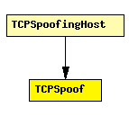

File: Applications/TCPApp/TCPSpoof.ned
C++ definition: click here
Sends fabricated TCP packets. This is a base implementation, you'll probably have to customize it in C++ according to what you want to send and when you want to send it.
Compatible with both IPv4 and IPv6.
The following diagram shows usage relationships between modules, networks and channels. Unresolved module (and channel) types are missing from the diagram. Click here to see the full picture.
If a module type shows up more than once, that means it has been defined in more than one NED file.
| TCPSpoofingHost | IP host with TCPSpoof in the application layer. |
| Name | Type | Description |
|---|---|---|
| srcAddress | string | local address; may be left empty ("") |
| destAddress | string | destination address |
| srcPort | numeric const | local port number |
| destPort | numeric const | destination port number |
| seqNo | numeric const | sequence number (-1 for TCP ISS) |
| isSYN | bool | whether to set SYN bit on packet |
| t | numeric const | simulation time to send at |
| Name | Direction | Description |
|---|---|---|
| ipv4Out | output | |
| ipv6Out | output |
simple TCPSpoof parameters: srcAddress: string, // local address; may be left empty ("") destAddress: string, // destination address srcPort: numeric const, // local port number destPort: numeric const, // destination port number seqNo: numeric const, // sequence number (-1 for TCP ISS) isSYN: bool, // whether to set SYN bit on packet t: numeric const; // simulation time to send at gates: out: ipv4Out; out: ipv6Out; endsimple